A tymczasem w Cameracie...
.
2013-01-06
Camerata przyjmuje z uśmiechem i . . . ustawia gości.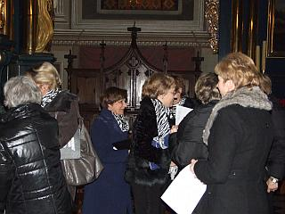 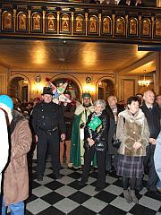
A goście przybywają tłumnie :) Kościół wypełniony „po brzegi”, co cieszy organizatorów, czyli NAS.
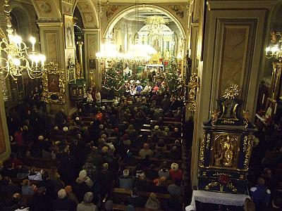 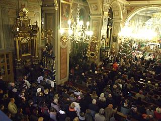
Już po raz siódmy, z inicjatywy wielickiego chóru Camerata, który powstał na początku stycznia 1997 roku, do Wieliczki przybyły chóry i zespoły z powiatu wielickiego, by wspólnym śpiewem uczcić Święto Objawienia Pańskiego, popularnie zwanym Świętem Trzech Króli.
W tym roku przybyła rekordowa ilość zespołów, bo aż 13, reprezentując gminę Wieliczka, Biskupice, Gdów i Kłaj.
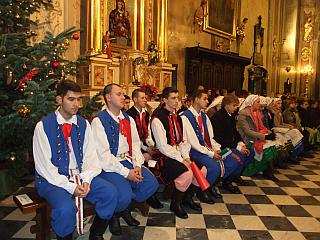 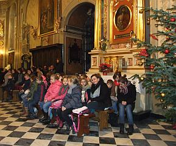 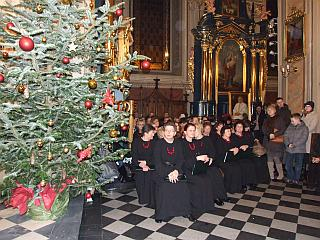 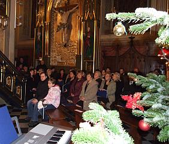
VII Wielicki Wieczór Kolęd żywiołowo rozpoczęła Grupa Kolędnicza ZZA OKNA z Małej Wsi pod kier. Józefa Kani.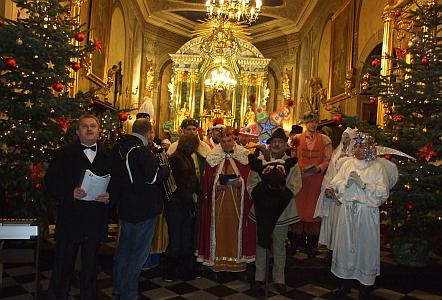
Po niej kolejno prezentowały się:chór Towarzystwa Śpiewaczego LUTNIA pod dyr. Jadwigi Szado, który od 140 lat nieprzerwanie ożywia i integruje życie kulturalne Wieliczki i rozsławia imię „solnego miasta” w kraju i zagranicą,
chór GAUDIUM pod dyr. Renaty Kamoda, założony w kwietniu 2012 r. przez Stowarzyszenie Rozwoju Gminy Kłaj,
chór MANDORA pod dyr. Ludmiły Staroń, który od roku zaznacza się w życiu kulturalnym Gminy Biskupice,
chór TUTTE LE CORDE pod dyr. Elżbiety Gawryszewskiej, działający od 2008 r. przy Centrum Kultury w Gdowie,
chór dziewczęcy ZIARENKO z Podstolic pod dyr. Elżbiety Gawor, prowadzący ożywioną działalność i odnoszący sukcesy od 1994 r.,
chór Publicznej Szkoły Muzycznej I stopnia w Gdowie pod dyr. Elżbiety Gawryszewskiej, który powstał w 2008 r. i ma już na swoim koncie pierwsze sukcesy, chór dziecięcy KLEMENCIAKI pod dyr. Agnieszki Korczyńskiej, działający od 2005 r. przy Kościele Św. Klemensa w Wieliczce,
zespół regionalny SUŁKOWIANIE pod kier. Agnieszki Zabawy, działający od 2008 r. w Sułkowie,
chór im. JANA PAWŁA II pod dyr. Piotra Piwko, działający od 1981 r. w Stumianach, nagradzany i koncertujący z powodzeniem w kraju i zagranicą,
YANABANDA pod kier. Sylwii Dzióbek, mający na swoim koncie wiele występów w kraju i zagranicą oraz znaczące osiągnięcia,
Chór CAMERATA pod dyr. Izabeli Szoty, prężnie działający od 16 lat, wielokrotnie nagradzany, koncertujący w kraju i całej Europie,
Chór Szkoły Muzycznej I stopnia w Wieliczce pod dyr. Izabeli Szoty, istniejący od 2008 r. i mający na swoim koncie kilka znaczących osiągnięć.
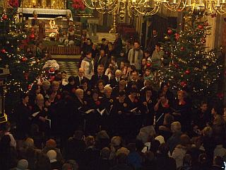 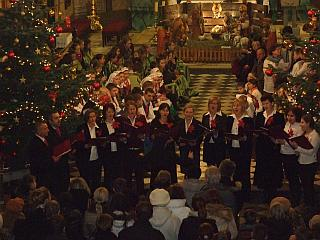 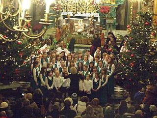 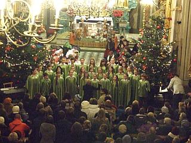 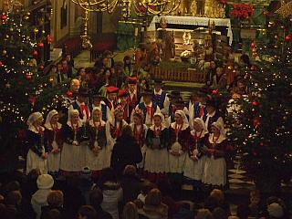 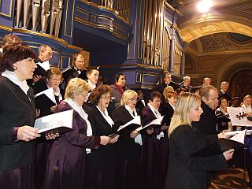 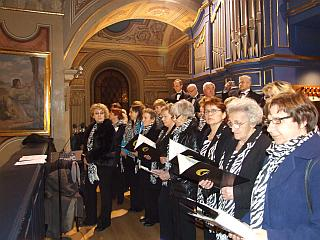 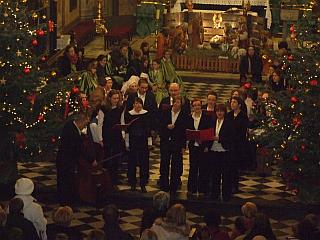 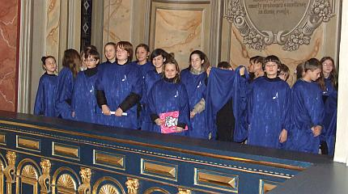
Każdy z wymienionych chórów zaprezentował 2 kolędy, po czym wnętrze wielickiej świątyni wypełniło się wspólnym śpiewem 400 chórzystów, którym akompaniowali Paweł Gajewski, Dominik Cichy, Jakub Konarski (trąbki), Michał Suchoń (fagot) oraz Leszek Surmacz (organy).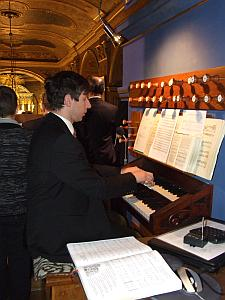
Niezwykle uroczyście zabrzmiał chorał z „Weihnachts-Oratorium” (Oratorium na Boże Narodzenie) samego mistrza Jana Sebastiana Bacha - „Ach, mein herzliebes Jesulein”:Ach, mój najdroższy Jezuseczku,
Święte miejsce, jak w żłóbeczku
uczyń w sercu moim na dnie,
abym nigdy nie zapomniał Ciebie.
Potem do wspólnego śpiewu włączyli się wszyscy, którzy przybyli radośnie i triumfalnie do żłóbka, by zobaczyć Niebieskiego Króla i upaść przed Nim na kolana oraz poprosić z pokorą:
„Podnieś rękę Boże Dziecię, błogosław Ojczyznę miłą”.
Na zakończenie wszystkie zespoły otrzymały pamiątkowe dyplomy z rąk Urszuli Ruseckiej, Zastępcy Burmistrza Wieliczki, Ks. Tomasza Bajera oraz Izabeli Szoty – Dyrektor wielickiej Szkoły Muzycznej.
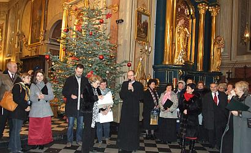
Mieliśmy też mały wesoły „incydencik”, który opisała nasza Cameratka Ewa Roeske-Tracz a sfotografowałam ja.„Historia bez precedensu”
Pewni chórzyści, w czas kolędowania,
widząc, na ścianie od organów, kołki.
Pozawieszali na nich swe ubrania
myśląc, że pewnie to szatnia, (matołki).
Pan organista, zgnębion profanacją,
zareagował w sposób oto taki:
Od ręki skreślił na papierze słowa,
w których pouczył że „TO NIE WIESZAKI ”
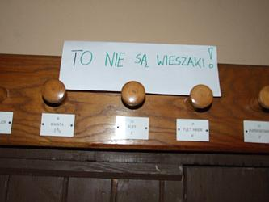
A że registry, to element kruchy,
urwał się jeden, ku jego rozpaczy
w chwili, gdy zrzucał zawieszone ciuchy.
Kto mi nie wierzy, niech na zdjęcie patrzy.

© Stowarzyszenie Muzyczne Chór Camerata Wieliczka
Projekt i wykonanie:  Prowadzenie strony: Małgorzata Wysocka-Cebula
Prowadzenie strony: Małgorzata Wysocka-Cebula